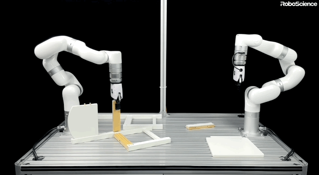

Robots Acquire a "Universal Brain": RoboScience Debuts Visics Model, Enabling Cross-Scenario Autonomy
On the trajectory from artificial intelligence to embodied intelligence, robotics is undergoing a consolidation shift away from fragmentation. On June 24, RoboScience unveiled Visics, a general-purpose embodied intelligence model, along with its core architecture, VLOA (Vision-Language-Object-Action). The development signals that robots are no longer confined to task-specific repetitive training but have acquired cross-platform, cross-object, cross-task general manipulation capabilities.
Historically, the embodied intelligence sector relied on "action replication"—requiring robots to memorize specific joint trajectories. The approach's critical flaw is its lack of generalizability: a hardware change or object substitution renders the model entirely ineffective. Tian Ye, Founder and CEO of RoboScience, argued that for robots to operate in the real world, poor generalization and long-horizon task execution must be addressed.

To overcome this, Visics adopts "object 3D point cloud trajectories" as a unified intermediate representation. The model is built on a dual-engine architecture: an embodied world model—pre-trained on vast video corpora—that grasps object motion dynamics and causality in the physical world, and a general manipulation model that translates predicted trajectories into hardware-specific control commands. This decoupled, layered design allows robots to first interpret object motion logic, then flexibly engage different embodiments to execute tasks.
To address the industry's chronic challenge of costly and inefficient data acquisition for embodied intelligence, RoboScience has constructed a dual data flywheel combining simulation and video. Leveraging its proprietary high-fidelity simulation engine, RoboMirage, and an automated annotation pipeline, the per-sample data cost has been reduced to one percent—or less—of conventional methods. Growing at hundreds of thousands of hours per week, the company is on track to build a 1TB-scale high-quality dataset by 2026.

On commercial rollout, RoboScience has elected to enter through the "object dimension." Co-founder Wang Tao noted that the company is prioritizing high-SKU, multi-category environments—supermarkets, logistics, and eldercare—over head-on competition with established industrial automation. Its technology is currently being piloted across retail and logistics, with standardized robot hardware mass production targeted within the year.
Evolved from a single-task executor to a cross-scenario generalist agent, RoboScience's trajectory mirrors embodied intelligence's migration from laboratory settings to demanding industrial deployment. As this integrated hardware-software solution matures, robots may at last acquire the operational resilience to navigate complex dynamic environments—unlocking value across production and service frontlines.